So far in our discussions on electricity and electric circuits, we have not discussed in any detail how batteries function. Rather, we have simply assumed that they produce constant voltage through some sort of mysterious process. Here, we will explore that process to some degree and cover some of the practical considerations involved with real batteries and their use in power systems.
In the first chapter of this book, the concept of an atom was discussed, as being the basic building-block of all material objects. Atoms, in turn, are composed of even smaller pieces of matter called particles. Electrons, protons, and neutrons are the basic types of particles found in atoms. Each of these particle types plays a distinct role in the behavior of an atom. While electrical activity involves the motion of electrons, the chemical identity of an atom (which largely determines how conductive the material will be) is determined by the number of protons in the nucleus (center).
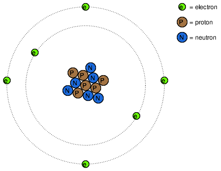
The protons in an atom's nucleus are extremely difficult to dislodge, and so the chemical identity of any atom is very stable. One of the goals of the ancient alchemists (to turn lead into gold) was foiled by this sub-atomic stability. All efforts to alter this property of an atom by means of heat, light, or friction were met with failure. The electrons of an atom, however, are much more easily dislodged. As we have already seen, friction is one way in which electrons can be transferred from one atom to another (glass and silk, wax and wool), and so is heat (generating voltage by heating a junction of dissimilar metals, as in the case of thermocouples).
Electrons can do much more than just move around and between atoms: they can also serve to link different atoms together. This linking of atoms by electrons is called a chemical bond. A crude (and simplified) representation of such a bond between two atoms might look like this:
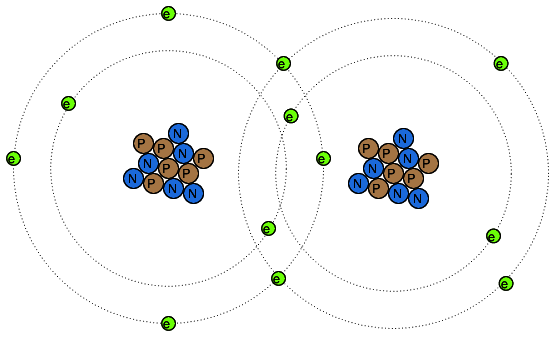
There are several types of chemical bonds, the one shown above being representative of a covalent bond, where electrons are shared between atoms. Because chemical bonds are based on links formed by electrons, these bonds are only as strong as the immobility of the electrons forming them. That is to say, chemical bonds can be created or broken by the same forces that force electrons to move: heat, light, friction, etc.
When atoms are joined by chemical bonds, they form materials with unique properties known as molecules. The dual-atom picture shown above is an example of a simple molecule formed by two atoms of the same type. Most molecules are unions of different types of atoms. Even molecules formed by atoms of the same type can have radically different physical properties. Take the element carbon, for instance: in one form, graphite, carbon atoms link together to form flat "plates" which slide against one another very easily, giving graphite its natural lubricating properties. In another form, diamond, the same carbon atoms link together in a different configuration, this time in the shapes of interlocking pyramids, forming a material of exceeding hardness. In yet another form, Fullerene, dozens of carbon atoms form each molecule, which looks something like a soccer ball. Fullerene molecules are very fragile and lightweight. The airy soot formed by excessively rich combustion of acetylene gas (as in the initial ignition of an oxy-acetylene welding/cutting torch) contains many Fullerene molecules.
When alchemists succeeded in changing the properties of a substance by heat, light, friction, or mixture with other substances, they were really observing changes in the types of molecules formed by atoms breaking and forming bonds with other atoms. Chemistry is the modern counterpart to alchemy, and concerns itself primarily with the properties of these chemical bonds and the reactions associated with them.
A type of chemical bond of particular interest to our study of batteries is the so-called ionic bond, and it differs from the covalent bond in that one atom of the molecule possesses an excess of electrons while another atom lacks electrons, the bonds between them being a result of the electrostatic attraction between the two unlike charges. When ionic bonds are formed from neutral atoms, there is a transfer of electrons between the positively and negatively charged atoms. An atom that gains an excess of electrons is said to be reduced; an atom with a deficiency of electrons is said to be oxidized. A mnemonic to help remember the definitions is OIL RIG (oxidized is less; reduced is gained). It is important to note that molecules will often contain both ionic and covalent bonds. Sodium hydroxide (lye, NaOH) has an ionic bond between the sodium atom (positive) and the hydroxyl ion (negative). The hydroxyl ion has a covalent bond (shown as a bar) between the hydrogen and oxygen atoms:
Na+ O—H-Sodium only loses one electron, so its charge is +1 in the above example. If an atom loses more than one electron, the resulting charge can be indicated as +2, +3, +4, etc. or by a Roman numeral in parentheses showing the oxidation state, such as (I), (II), (IV), etc. Some atoms can have multiple oxidation states, and it is sometimes important to include the oxidation state in the molecular formula to avoid ambiguity.
The formation of ions and ionic bonds from neutral atoms or molecules (or vice versa) involves the transfer of electrons. That transfer of electrons can be harnessed to generate an electric current.A device constructed to do just this is called a voltaic cell, or cell for short, usually consisting of two metal electrodes immersed in a chemical mixture (called an electrolyte) designed to facilitate such an electrochemical (oxidation/reduction) reaction:
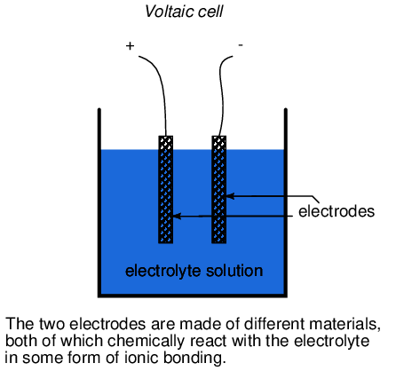
In the common "lead-acid" cell (the kind commonly used in automobiles), the negative electrode is made of lead (Pb) and the positive is made of lead (IV) dioxide (Pb02), both metallic substances. It is important to note that lead dioxide is metallic and is an electrical conductor, unlike other metal oxides that are usually insulators. (note: Table below) The electrolyte solution is a dilute sulfuric acid (H2SO4 + H2O). If the electrodes of the cell are connected to an external circuit, such that electrons have a place to flow from one to the other, lead(IV) atoms in the positive electrode (PbO2) will gain two electrons each to produce Pb(II)O. The oxygen atoms which are “left over” combine with positively charged hydrogen ions (H)+to form water (H2O). This flow of electrons into into the lead dioxide (PbO2) electrode, gives it a positive electrical charge. Consequently, lead atoms in the negative electrode give up two electrons each to produce lead Pb(II), which combines with sulfate ions (SO4-2) produced from the disassociation of the hydrogen ions (H+) from the sulfuric acid (H2SO4) to form lead sulfate (PbSO4). The flow of electrons out of the lead electrode gives it a negative electrical charge. These reactions are shown diagrammitically below:[DOE]
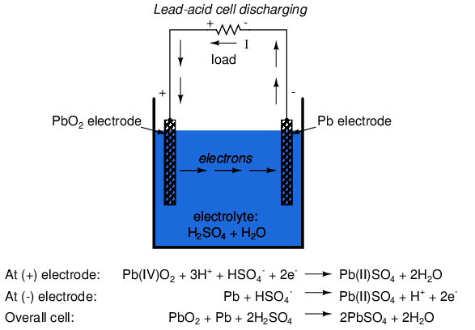
Note on lead oxide nomenclature
|
The nomenclature for lead oxides can be confusing. The term, lead oxide can refer to either Pb(II)O or Pb(IV)O2, and the correct compound can be determined usually from context. Other synonyms for Pb(IV)O2 are: lead dioxide, lead peroxide, plumbic oxide, lead oxide brown, and lead superoxide. The term, lead peroxide is particularly confusing, as it implies a compound of lead (II) with two oxygen atoms, Pb(II)O2, which apparently does not exist. Unfortunately, the term lead peroxide has persisted in industrial literature. In this section, lead dioxide will be used to refer to Pb(IV)O2, and lead oxide will refer to Pb(II)O. The oxidation states will not be shown usually. |
This process of the cell providing electrical energy to supply a load is called discharging, since it is depleting its internal chemical reserves. Theoretically, after all of the sulfuric acid has been exhausted, the result will be two electrodes of lead sulfate (PbSO4) and an electrolyte solution of pure water (H2O), leaving no more capacity for additional ionic bonding. In this state, the cell is said to be fully discharged. In a lead-acid cell, the state of charge can be determined by an analysis of acid strength. This is easily accomplished with a device called a hydrometer, which measures the specific gravity (density) of the electrolyte. Sulfuric acid is denser than water, so the greater the charge of a cell, the greater the acid concentration, and thus a denser electrolyte solution.
There is no single chemical reaction representative of all voltaic cells, so any detailed discussion of chemistry is bound to have limited application. The important thing to understand is that electrons are motivated to and/or from the cell's electrodes via ionic reactions between the electrode molecules and the electrolyte molecules. The reaction is enabled when there is an external path for electric current, and ceases when that path is broken.
Being that the motivation for electrons to move through a cell is chemical in nature, the amount of voltage (electromotive force) generated by any cell will be specific to the particular chemical reaction for that cell type. For instance, the lead-acid cell just described has a nominal voltage of 2.04 volts per cell, based on a fully "charged" cell (acid concentration strong) in good physical condition. There are other types of cells with different specific voltage outputs. The Edison cell, for example, with a positive electrode made of nickel oxide, a negative electrode made of iron, and an electrolyte solution of potassium hydroxide (a caustic, not acid, substance) generates a nominal voltage of only 1.2 volts, due to the specific differences in chemical reaction with those electrode and electrolyte substances.
The chemical reactions of some types of cells can be reversed by forcing electric current backwards through the cell (in the negative electrode and out the positive electrode). This process is called charging. Any such (rechargeable) cell is called a secondary cell. A cell whose chemistry cannot be reversed by a reverse current is called a primary cell.
When a lead-acid cell is charged by an external current source, the chemical reactions experienced during discharge are reversed:
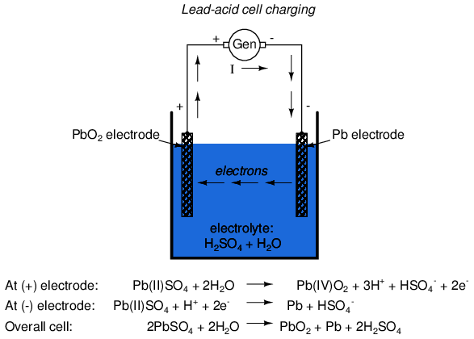
The word battery simply means a group of similar components. In military vocabulary, a "battery" refers to a cluster of guns. In electricity, a "battery" is a set of voltaic cells designed to provide greater voltage and/or current than is possible with one cell alone.
The symbol for a cell is very simple, consisting of one long line and one short line, parallel to each other, with connecting wires:
The symbol for a battery is nothing more than a couple of cell symbols stacked in series:
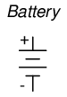
As was stated before, the voltage produced by any particular kind of cell is determined strictly by the chemistry of that cell type. The size of the cell is irrelevant to its voltage. To obtain greater voltage than the output of a single cell, multiple cells must be connected in series. The total voltage of a battery is the sum of all cell voltages. A typical automotive lead-acid battery has six cells, for a nominal voltage output of 6 x 2.0 or 12.0 volts:
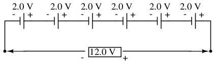
The cells in an automotive battery are contained within the same hard rubber housing, connected together with thick, lead bars instead of wires. The electrodes and electrolyte solutions for each cell are contained in separate, partitioned sections of the battery case. In large batteries, the electrodes commonly take the shape of thin metal grids or plates, and are often referred to as plates instead of electrodes.
For the sake of convenience, battery symbols are usually limited to four lines, alternating long/short, although the real battery it represents may have many more cells than that. On occasion, however, you might come across a symbol for a battery with unusually high voltage, intentionally drawn with extra lines. The lines, of course, are representative of the individual cell plates:
If the physical size of a cell has no impact on its voltage, then what does it affect? The answer is resistance, which in turn affects the maximum amount of current that a cell can provide. Every voltaic cell contains some amount of internal resistance due to the electrodes and the electrolyte. The larger a cell is constructed, the greater the electrode contact area with the electrolyte, and thus the less internal resistance it will have.
Although we generally consider a cell or battery in a circuit to be a perfect source of voltage (absolutely constant), the current through it dictated solely by the external resistance of the circuit to which it is attached, this is not entirely true in real life. Since every cell or battery contains some internal resistance, that resistance must affect the current in any given circuit:
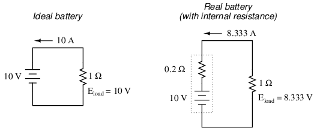
The real battery shown above within the dotted lines has an internal resistance of 0.2 Ω, which affects its ability to supply current to the load resistance of 1 Ω. The ideal battery on the left has no internal resistance, and so our Ohm's Law calculations for current (I=E/R) give us a perfect value of 10 amps for current with the 1 ohm load and 10 volt supply. The real battery, with its built-in resistance further impeding the flow of electrons, can only supply 8.333 amps to the same resistance load.
The ideal battery, in a short circuit with 0 Ω resistance, would be able to supply an infinite amount of current. The real battery, on the other hand, can only supply 50 amps (10 volts / 0.2 Ω) to a short circuit of 0 Ω resistance, due to its internal resistance. The chemical reaction inside the cell may still be providing exactly 10 volts, but voltage is dropped across that internal resistance as electrons flow through the battery, which reduces the amount of voltage available at the battery terminals to the load.
Since we live in an imperfect world, with imperfect batteries, we need to understand the implications of factors such as internal resistance. Typically, batteries are placed in applications where their internal resistance is negligible compared to that of the circuit load (where their short-circuit current far exceeds their usual load current), and so the performance is very close to that of an ideal voltage source.
If we need to construct a battery with lower resistance than what one cell can provide (for greater current capacity), we will have to connect the cells together in parallel:
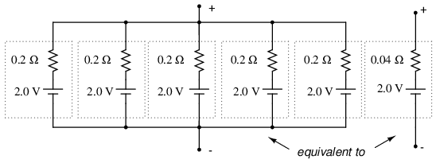
Essentially, what we have done here is determine the Thevenin equivalent of the five cells in parallel (an equivalent network of one voltage source and one series resistance). The equivalent network has the same source voltage but a fraction of the resistance of any individual cell in the original network. The overall effect of connecting cells in parallel is to decrease the equivalent internal resistance, just as resistors in parallel diminish in total resistance. The equivalent internal resistance of this battery of 5 cells is 1/5 that of each individual cell. The overall voltage stays the same: 2.0 volts. If this battery of cells were powering a circuit, the current through each cell would be 1/5 of the total circuit current, due to the equal split of current through equal-resistance parallel branches.
Because batteries create electron flow in a circuit by exchanging electrons in ionic chemical reactions, and there is a limited number of molecules in any charged battery available to react, there must be a limited amount of total electrons that any battery can motivate through a circuit before its energy reserves are exhausted. Battery capacity could be measured in terms of total number of electrons, but this would be a huge number. We could use the unit of the coulomb (equal to 6.25 x 1018 electrons, or 6,250,000,000,000,000,000 electrons) to make the quantities more practical to work with, but instead a new unit, the amp-hour, was made for this purpose. Since 1 amp is actually a flow rate of 1 coulomb of electrons per second, and there are 3600 seconds in an hour, we can state a direct proportion between coulombs and amp-hours: 1 amp-hour = 3600 coulombs. Why make up a new unit when an old would have done just fine? To make your lives as students and technicians more difficult, of course!
A battery with a capacity of 1 amp-hour should be able to continuously supply a current of 1 amp to a load for exactly 1 hour, or 2 amps for 1/2 hour, or 1/3 amp for 3 hours, etc., before becoming completely discharged. In an ideal battery, this relationship between continuous current and discharge time is stable and absolute, but real batteries don't behave exactly as this simple linear formula would indicate. Therefore, when amp-hour capacity is given for a battery, it is specified at either a given current, given time, or assumed to be rated for a time period of 8 hours (if no limiting factor is given).
For example, an average automotive battery might have a capacity of about 70 amp-hours, specified at a current of 3.5 amps. This means that the amount of time this battery could continuously supply a current of 3.5 amps to a load would be 20 hours (70 amp-hours / 3.5 amps). But let's suppose that a lower-resistance load were connected to that battery, drawing 70 amps continuously. Our amp-hour equation tells us that the battery should hold out for exactly 1 hour (70 amp-hours / 70 amps), but this might not be true in real life. With higher currents, the battery will dissipate more heat across its internal resistance, which has the effect of altering the chemical reactions taking place within. Chances are, the battery would fully discharge some time before the calculated time of 1 hour under this greater load.
Conversely, if a very light load (1 mA) were to be connected to the battery, our equation would tell us that the battery should provide power for 70,000 hours, or just under 8 years (70 amp-hours / 1 milliamp), but the odds are that much of the chemical energy in a real battery would have been drained due to other factors (evaporation of electrolyte, deterioration of electrodes, leakage current within battery) long before 8 years had elapsed. Therefore, we must take the amp-hour relationship as being an ideal approximation of battery life, the amp-hour rating trusted only near the specified current or timespan given by the manufacturer. Some manufacturers will provide amp-hour derating factors specifying reductions in total capacity at different levels of current and/or temperature.
For secondary cells, the amp-hour rating provides a rule for necessary charging time at any given level of charge current. For example, the 70 amp-hour automotive battery in the previous example should take 10 hours to charge from a fully-discharged state at a constant charging current of 7 amps (70 amp-hours / 7 amps).
Approximate amp-hour capacities of some common batteries are given here:
As a battery discharges, not only does it diminish its internal store of energy, but its internal resistance also increases (as the electrolyte becomes less and less conductive), and its open-circuit cell voltage decreases (as the chemicals become more and more dilute). The most deceptive change that a discharging battery exhibits is increased resistance. The best check for a battery's condition is a voltage measurement under load, while the battery is supplying a substantial current through a circuit. Otherwise, a simple voltmeter check across the terminals may falsely indicate a healthy battery (adequate voltage) even though the internal resistance has increased considerably. What constitutes a "substantial current" is determined by the battery's design parameters. A voltmeter check revealing too low of a voltage, of course, would positively indicate a discharged battery:
Fully charged battery:
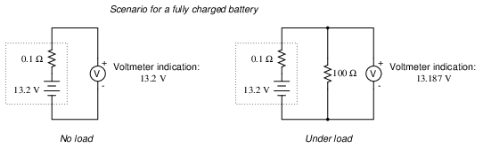
Now, if the battery discharges a bit . . .
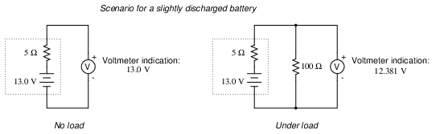
. . . and discharges a bit further . . .
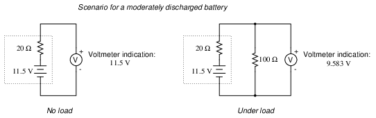
. . . and a bit further until its dead.
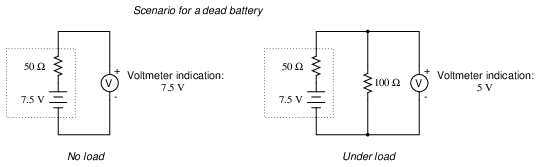
Notice how much better the battery's true condition is revealed when its voltage is checked under load as opposed to without a load. Does this mean that its pointless to check a battery with just a voltmeter (no load)? Well, no. If a simple voltmeter check reveals only 7.5 volts for a 13.2 volt battery, then you know without a doubt that its dead. However, if the voltmeter were to indicate 12.5 volts, it may be near full charge or somewhat depleted -- you couldn't tell without a load check. Bear in mind also that the resistance used to place a battery under load must be rated for the amount of power expected to be dissipated. For checking large batteries such as an automobile (12 volt nominal) lead-acid battery, this may mean a resistor with a power rating of several hundred watts.
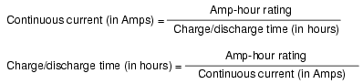
Back in the early days of electrical measurement technology, a special type of battery known as a mercury standard cell was popularly used as a voltage calibration standard. The output of a mercury cell was 1.0183 to 1.0194 volts DC (depending on the specific design of cell), and was extremely stable over time. Advertised drift was around 0.004 percent of rated voltage per year. Mercury standard cells were sometimes known as Weston cells or cadmium cells.
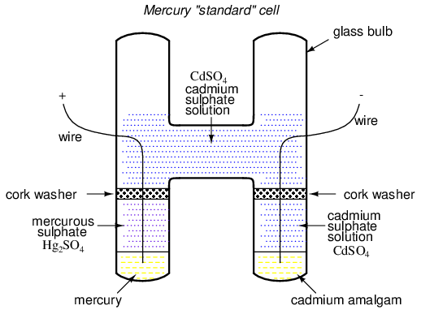
Unfortunately, mercury cells were rather intolerant of any current drain and could not even be measured with an analog voltmeter without compromising accuracy. Manufacturers typically called for no more than 0.1 mA of current through the cell, and even that figure was considered a momentary, or surge maximum! Consequently, standard cells could only be measured with a potentiometric (null-balance) device where current drain is almost zero. Short-circuiting a mercury cell was prohibited, and once short-circuited, the cell could never be relied upon again as a standard device.
Mercury standard cells were also susceptible to slight changes in voltage if physically or thermally disturbed. Two different types of mercury standard cells were developed for different calibration purposes: saturated and unsaturated. Saturated standard cells provided the greatest voltage stability over time, at the expense of thermal instability. In other words, their voltage drifted very little with the passage of time (just a few microvolts over the span of a decade!), but tended to vary with changes in temperature (tens of microvolts per degree Celsius). These cells functioned best in temperature-controlled laboratory environments where long-term stability is paramount. Unsaturated cells provided thermal stability at the expense of stability over time, the voltage remaining virtually constant with changes in temperature but decreasing steadily by about 100 µV every year. These cells functioned best as "field" calibration devices where ambient temperature is not precisely controlled. Nominal voltage for a saturated cell was 1.0186 volts, and 1.019 volts for an unsaturated cell.
Modern semiconductor voltage (zener diode regulator) references have superseded standard cell batteries as laboratory and field voltage standards.
A fascinating device closely related to primary-cell batteries is the fuel cell, so-called because it harnesses the chemical reaction of combustion to generate an electric current. The process of chemical oxidation (oxygen ionically bonding with other elements) is capable of producing an electron flow between two electrodes just as well as any combination of metals and electrolytes. A fuel cell can be thought of as a battery with an externally supplied chemical energy source.
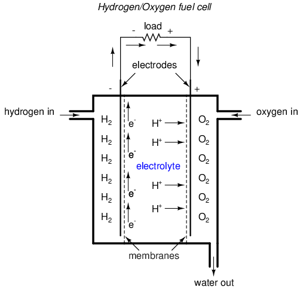
To date, the most successful fuel cells constructed are those which run on hydrogen and oxygen, although much research has been done on cells using hydrocarbon fuels. While "burning" hydrogen, a fuel cell's only waste byproducts are water and a small amount of heat. When operating on carbon-containing fuels, carbon dioxide is also released as a byproduct. Because the operating temperature of modern fuel cells is far below that of normal combustion, no oxides of nitrogen (NOx) are formed, making it far less polluting, all other factors being equal.
The efficiency of energy conversion in a fuel cell from chemical to electrical far exceeds the theoretical Carnot efficiency limit of any internal-combustion engine, which is an exciting prospect for power generation and hybrid electric automobiles.
Another type of "battery" is the solar cell, a by-product of the semiconductor revolution in electronics. The photoelectric effect, whereby electrons are dislodged from atoms under the influence of light, has been known in physics for many decades, but it has only been with recent advances in semiconductor technology that a device existed capable of harnessing this effect to any practical degree. Conversion efficiencies for silicon solar cells are still quite low, but their benefits as power sources are legion: no moving parts, no noise, no waste products or pollution (aside from the manufacture of solar cells, which is still a fairly "dirty" industry), and indefinite life.
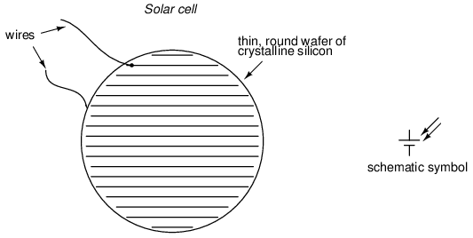
Specific cost of solar cell technology (dollars per kilowatt) is still very high, with little prospect of significant decrease barring some kind of revolutionary advance in technology. Unlike electronic components made from semiconductor material, which can be made smaller and smaller with less scrap as a result of better quality control, a single solar cell still takes the same amount of ultra-pure silicon to make as it did thirty years ago. Superior quality control fails to yield the same production gain seen in the manufacture of chips and transistors (where isolated specks of impurity can ruin many microscopic circuits on one wafer of silicon). The same number of impure inclusions does little to impact the overall efficiency of a 3-inch solar cell.
Yet another type of special-purpose "battery" is the chemical detection cell. Simply put, these cells chemically react with specific substances in the air to create a voltage directly proportional to the concentration of that substance. A common application for a chemical detection cell is in the detection and measurement of oxygen concentration. Many portable oxygen analyzers have been designed around these small cells. Cell chemistry must be designed to match the specific substance(s) to be detected, and the cells do tend to "wear out," as their electrode materials deplete or become contaminated with use.
When connecting batteries together to form larger "banks" (a battery of batteries?), the constituent batteries must be matched to each other so as to not cause problems. First we will consider connecting batteries in series for greater voltage:
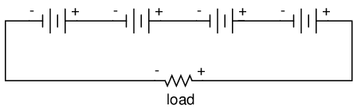
We know that the current is equal at all points in a series circuit, so whatever amount of current there is in any one of the series-connected batteries must be the same for all the others as well. For this reason, each battery must have the same amp-hour rating, or else some of the batteries will become depleted sooner than others, compromising the capacity of the whole bank. Please note that the total amp-hour capacity of this series battery bank is not affected by the number of batteries.
Next, we will consider connecting batteries in parallel for greater current capacity (lower internal resistance), or greater amp-hour capacity:
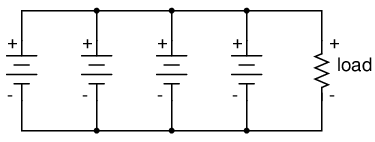
We know that the voltage is equal across all branches of a parallel circuit, so we must be sure that these batteries are of equal voltage. If not, we will have relatively large currents circulating from one battery through another, the higher-voltage batteries overpowering the lower-voltage batteries. This is not good.
On this same theme, we must be sure that any overcurrent protection (circuit breakers or fuses) are installed in such a way as to be effective. For our series battery bank, one fuse will suffice to protect the wiring from excessive current, since any break in a series circuit stops current through all parts of the circuit:
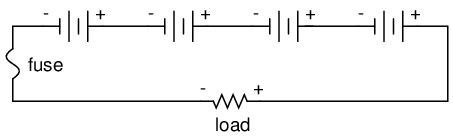
With a parallel battery bank, one fuse is adequate for protecting the wiring against load overcurrent (between the parallel-connected batteries and the load), but we have other concerns to protect against as well. Batteries have been known to internally short-circuit, due to electrode separator failure, causing a problem not unlike that where batteries of unequal voltage are connected in parallel: the good batteries will overpower the failed (lower voltage) battery, causing relatively large currents within the batteries' connecting wires. To guard against this eventuality, we should protect each and every battery against overcurrent with individual battery fuses, in addition to the load fuse:
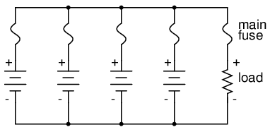
When dealing with secondary-cell batteries, particular attention must be paid to the method and timing of charging. Different types and construction of batteries have different charging needs, and the manufacturer's recommendations are probably the best guide to follow when designing or maintaining a system. Two distinct concerns of battery charging are cycling and overcharging. Cycling refers to the process of charging a battery to a "full" condition and then discharging it to a lower state. All batteries have a finite (limited) cycle life, and the allowable "depth" of cycle (how far it should be discharged at any time) varies from design to design. Overcharging is the condition where current continues to be forced backwards through a secondary cell beyond the point where the cell has reached full charge. With lead-acid cells in particular, overcharging leads to electrolysis of the water ("boiling" the water out of the battery) and shortened life.
Any battery containing water in the electrolyte is subject to the production of hydrogen gas due to electrolysis. This is especially true for overcharged lead-acid cells, but not exclusive to that type. Hydrogen is an extremely flammable gas (especially in the presence of free oxygen created by the same electrolysis process), odorless and colorless. Such batteries pose an explosion threat even under normal operating conditions, and must be treated with respect. The author has been a firsthand witness to a lead-acid battery explosion, where a spark created by the removal of a battery charger (small DC power supply) from an automotive battery ignited hydrogen gas within the battery case, blowing the top off the battery and splashing sulfuric acid everywhere. This occurred in a high school automotive shop, no less. If it were not for all the students nearby wearing safety glasses and buttoned-collar overalls, significant injury could have occurred.
When connecting and disconnecting charging equipment to a battery, always make the last connection (or first disconnection) at a location away from the battery itself (such as at a point on one of the battery cables, at least a foot away from the battery), so that any resultant spark has little or no chance of igniting hydrogen gas.
In large, permanently installed battery banks, batteries are equipped with vent caps above each cell, and hydrogen gas is vented outside of the battery room through hoods immediately over the batteries. Hydrogen gas is very light and rises quickly. The greatest danger is when it is allowed to accumulate in an area, awaiting ignition.
More modern lead-acid battery designs are sealed, fabricated to re-combine the electrolyzed hydrogen and oxygen back into water, inside the battery case itself. Adequate ventilation might still be a good idea, just in case a battery were to develop a leak. [JOM]
Contributors to this chapter are listed in chronological order of their contributions, from most recent to first. See Appendix 2 (Contributor List) for dates and contact information.
Jason Starck (June 2000): HTML document formatting, which led to a much better-looking second edition.
John Anhalt (December 2008): Updated Lead-acid cell chemistry..
Lessons In Electric Circuits copyright (C) 2000-2023 Tony R. Kuphaldt, under the terms and conditions of the CC BY License.